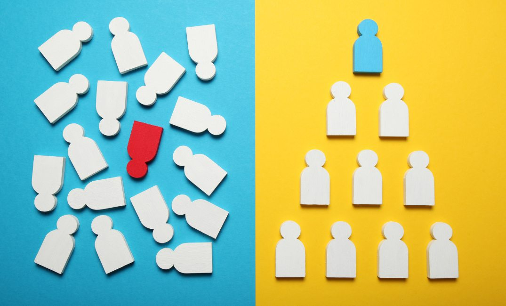

FEEDBACK — 周りの人からの声
この人について、
教えてください。
- 5問
- 3分ほど
あなたから見た「この人」の良さを、正直に聞かせてください。
回答は自動では送信されません。最後に出る「回答コード」を送ったときだけ届きます。
How it works — 進め方
自分の声と、周りの声。
二つを重ねると、見えてくる。
-
STEP 01 自分・自社について答える
5つの領域、16の問い。直感で選べば約5分です。
-
STEP 02 周りの人に聞く
依頼文を送るだけ。届いた「回答コード」を貼りつけます。
-

重ねて、照らし合わせる
差のある領域に、まだ気づいていない価値が隠れています。
※この診断は、医療的・心理学的な判定ではありません。点数は優劣や適性を決めるものではありません。
Five areas — 価値がめぐる5つの領域
価値は、
見つけて、届けて、めぐっていく。
中心にあるのは、あなたの「らしさ」。そこから5つの領域へ光が流れ、輪のようにめぐります。
- 01自分に聞く
- 02周りに聞く
- 03重ねる
Step 1 — 自分・自社について答える
まずは、
今の自分を見てみる。
正解はありません。思い浮かんだ数字を、直感で選んでください。1問10秒くらいで大丈夫です。
Result — おつかれさまでした！ 自分・自社から見た今
次に考えてみたい問い
5つの領域の点数
中心があなた。体を包む青いオーラが自分の点数です。
周りの声が集まると、その外側に金のオーラが灯ります。
数値で詳しく見る
すでに活かせている強み
ヒントが見つかる場所
- 01自分に聞く
- 02周りに聞く
- 03重ねる
Step 2 — 周りの人に聞いてみる
価値は、
受け取った人が知っている。
立場の違う3人以上に聞くと、見え方の違いがつかみやすくなります。 家族・友人・仕事仲間・お客様など。社内だけでなく、顧客や取引先にも。
- 1依頼文をコピーして送る
- 2相手が3分ほどで答える
- 3届いたコードを貼りつける
Invite
依頼文とリンク
Collect
届いた回答コードを貼りつける
「AW-」から始まるコードです。いくつかまとめて貼りつけても読み込めます。
Interview
聞き取った回答を入力する
対面や電話で聞いた答えを、その人の言葉のまま入力してください。
Thank you
ありがとうございました。
下の回答コードをコピーして、依頼してくれた方にメールやLINEで送ってください。
コードを送るまで、回答はどこにも届きません。
- 01自分に聞く
- 02周りに聞く
- 03重ねる
Step 3 — 重ねて、照らし合わせる
自分の思う価値と、
周りが感じる価値。
差は間違いではなく、次の一歩を考える材料です。
Step 1 の回答と、周りの人からの回答が1件以上そろうと、ここに重ねて表示されます。
領域ごとの比較
内側の青＝自分、外側の金＝周りの人。点数が高い向きほど、オーラが強く立ちのぼります。差が1.0以上の領域には印が付きます。
数値で詳しく見る
周りの人には、各領域に1問ずつ聞いています。自分の点数（3問の平均）と完全には同じ物差しではないため、0.5程度の差は「近い」と見てください。
立場ごとの見え方
社内では評価されている価値が、顧客には届いていない、といった差が見つかることがあります。
Hidden value
自分では気づいていない価値かもしれない
周りのほうが高く感じている領域です。当たり前だと思って、見過ごしていませんか。
Not yet delivered
まだ伝わっていない価値かもしれない
自分のほうが高く感じている領域です。相手に届く形になっているか、見直してみましょう。
ことばの照らし合わせ
何度も出てくる言葉や、自分では書かなかった言葉に注目してみてください。
Reflection — 差があったら
差は、
次の問いを考える材料。
Guide — 結果の見方
点数より、
差とエピソードを見る。
点数の出し方
自分・自社の回答は、各領域3問の平均点です。周りの回答は、領域ごとの1問を、回答した人数で平均します。企業の場合は、立場ごとにも平均を出します。
点数の目安
- 4.0〜5.0
- 手応えがある価値が見え始めている、または活用されている状態です。
- 2.6〜3.9
- 伸ばせる余地がある一部ではできています。具体的な事例と、次の一歩を整理してみましょう。
- 1.0〜2.5
- これから育てるまず、周りの声や実際に起きていることを集めてみましょう。
※平均点は小数第1位で四捨五入して判定しています（例：3.97 → 4.0）。
今の段階の決め方
「見つける → 広げる → 届ける → 循環させる」の順に見て、最初に平均3.5を下回った領域を「今の段階」としています。4つすべてが3.5以上なら「新しい価値を生み出す段階」です。
Next step — 次の一歩
見つかった価値を、
これからの可能性へ。
どう広げ、誰に届け、続く形にしていくか。
個別セッションでは、診断結果をもとに、あなたや自社に合った具体的な行動を一緒に整理します。
診断結果を印刷・PDFで保存しておくと、セッションがスムーズです。